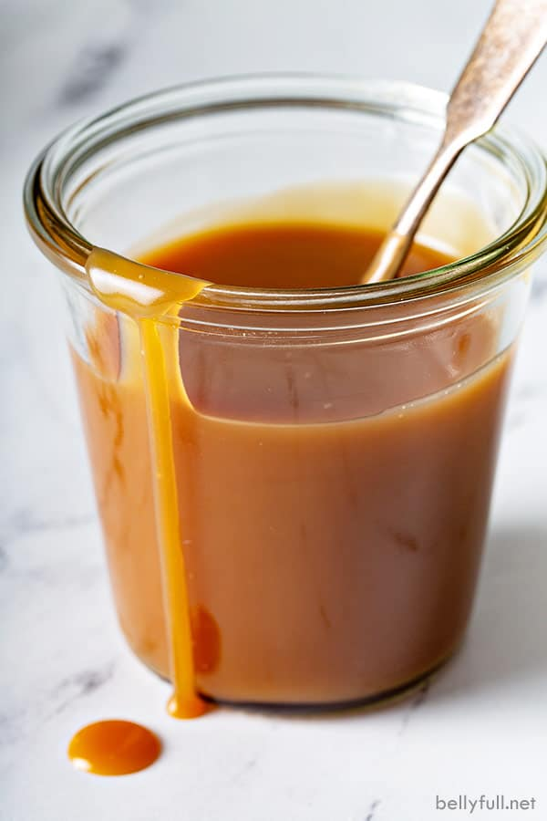

Simple Caramel Sauce
A very easy, simple, delicious caramel sauce for any occassion.

Ingredients:
- 1c Granulated Sugar
- 1/3c Water
- 3/4c Heavy Cream
- 2 tbsp Salted Butter
- 1 tsp Vanilla extract
Step by Step:
- Add sugar to a heavy bottomed saucepan, then shake it so it is evenly flat
- Add the water and gently stir to completely moisten
- Place pot over medium heat and cook until sugar completely dissolves ---Will turn clear
- Raise the heat to medium high and cook the simple syrup until it turns deep amber in color ---~10 minutes
- Remove pan from heat and immediately add the heavy cream ---Caramel will likely sieze, do not fret
- Add Butter and stir until the caramel dissolves again completely ---May need to put back on heat briefly, stirring constantly until smooth
- Let the caramel cool and Enjoy!